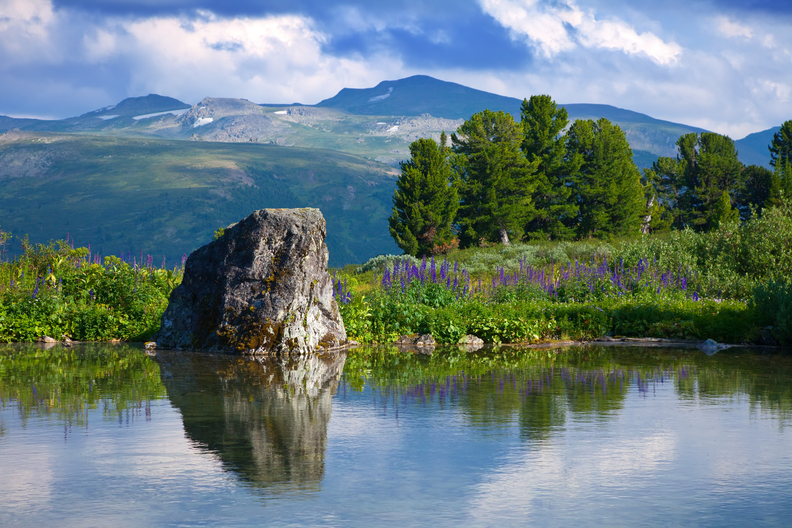

Планета Земля скрывает в себе бесчисленное множество живописных уголков, каждый из которых способен поразить воображение даже самого искушенного наблюдателя. От бескрайних песчаных пустынь, переливающихся золотом под лучами заходящего солнца, до величественных заснеженных горных пиков, уходящих высоко за облака — природа выступает в роли величайшего художника, создающего монументальные живые полотна.

Особое очарование таят в себе лесные массивы в переходные времена года. Осенний лес, окрашенный в багряные и янтарные тона, создает атмосферу светлой меланхолии и умиротворения, в то время как весеннее пробуждение природы наполняет пространство буйством зелени и свежими ароматами. Наблюдение за такими переменами позволяет человеку замедлить безумный ритм современной жизни и почувствовать себя частью чего-то первозданного и вечного.

Водные пейзажи занимают отдельное место в сердцах путешественников и фотографов. Спокойная гладь высокогорных озер, в которой как в зеркале отражаются скалы и небо, дарит ощущение абсолютной гармонии. В то же время бушующие океанские волны, разбивающиеся о каменистые утесы с оглушительным шумом, демонстрируют невероятную, дикую мощь стихии, перед которой человек замирает в искреннем восхищении.